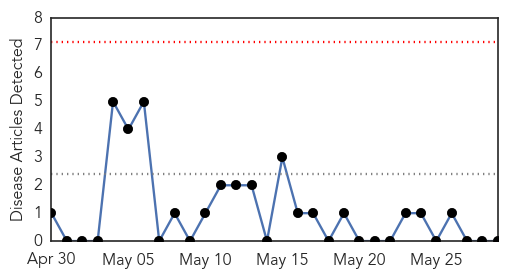
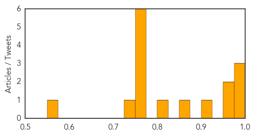

Pertussis
30-Day Web Trend
0 alerts, 0 warnings

30-Day Twitter Trend
0 alerts, 0 warnings

Article Locations


Article Confidences

Top Articles:
-
No articles found for May 29, 2015
Top Tweets:
-
No tweets found for May 29, 2015
Influenza
30-Day Web Trend
0 alerts, 0 warnings

30-Day Twitter Trend
5 alerts, 0 warnings

Article Locations

Article Confidences
Top Articles:
- 0.999
- NEW JERSEY man dies of LASSA FEVER ~ CDC description and history of LASSA FEVER ~ OKLAHOMAN has second case of BOURBON VIRUS diagnosed in US ~ MICHIGAN identifies first case of CHRONIC WASTING DISEASE
- 0.998
- China says South Korean traveller tested positive for Mers virus
- 0.994
- Canine influenza outbreak responsible for multiple pet deaths in U.S.
- 0.972
- What Pleasanton Dog Owners Should Know About Dog Flu
- 0.967
- Why you really don't want the flu
- 0.904
- Indestructible Virus Holds The Key To Human Infectious Disease Treatment
- 0.862
- The most from the coast
- 0.814
- Cases of dog flu in New York State
- 0.751
- May 29, 2015 Archives
- 0.751
- May 29, 2015 Archives
- 0.751
- May 28, 2015 Archives
- 0.751
- May 28, 2015 Archives
- 0.751
- May 28, 2015 Archives
- 0.751
- May 28, 2015 Archives
- 0.740
- Avian influenza is not a risk to the food supply
- 0.570
- 10 incidents discovered at the nation's biolabs
Top Tweets:
-
No tweets found for May 29, 2015